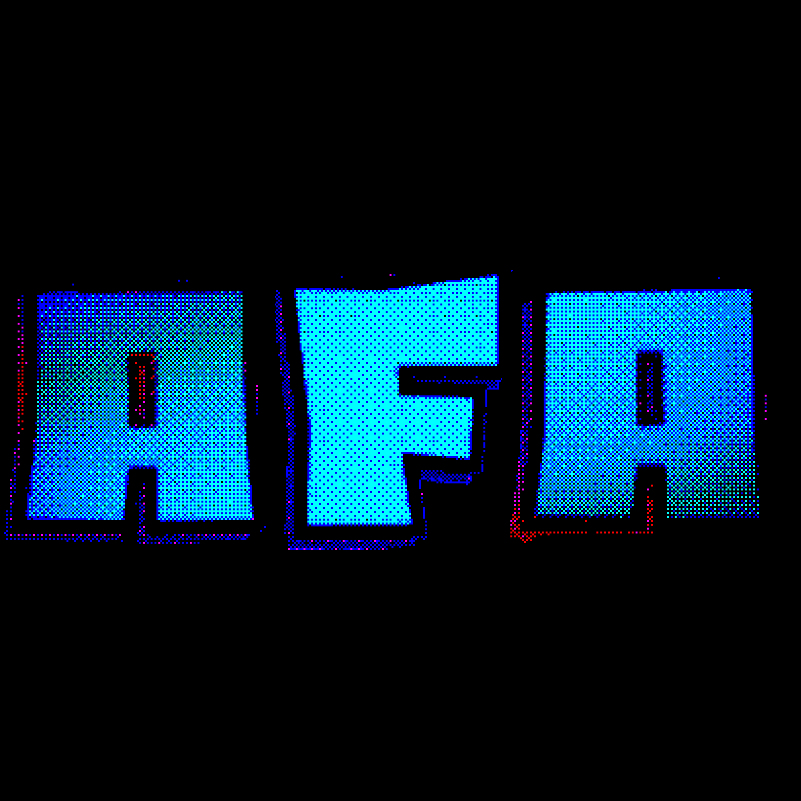

Agência A.F.A
A Anomaly Foundation Archives é uma organização governamental dedicada ao estudo, contenção e catalogação de anomalias. Nosso trabalho garante que ameaças desconhecidas sejam compreendidas antes que representem riscos à sociedade.
Departamento de Informação
Responsável pelo armazenamento de registros de anomalias e manutenção dos servidores principais da A.F.A.
AcessarDepartamento de Disciplina
Garante a ordem interna, controle de funcionários e aplicação de protocolo de segurança contra anomalias.
Acessar